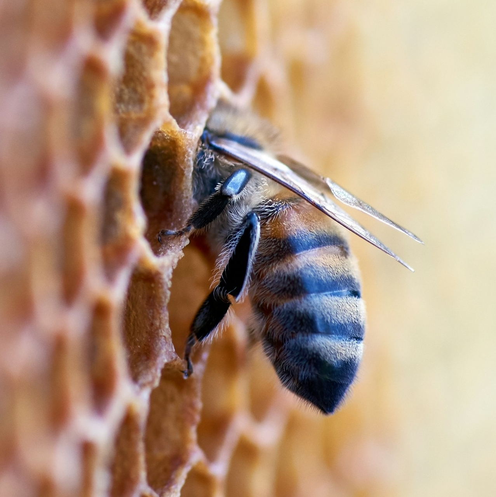
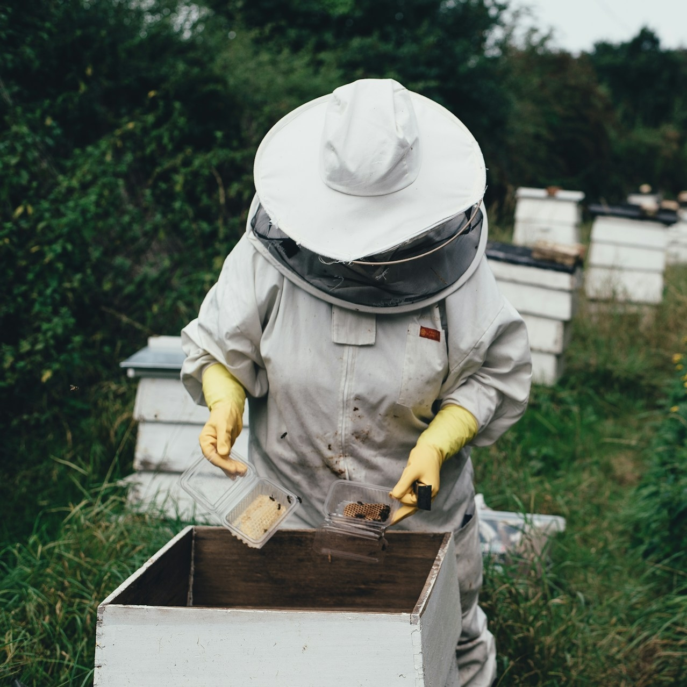
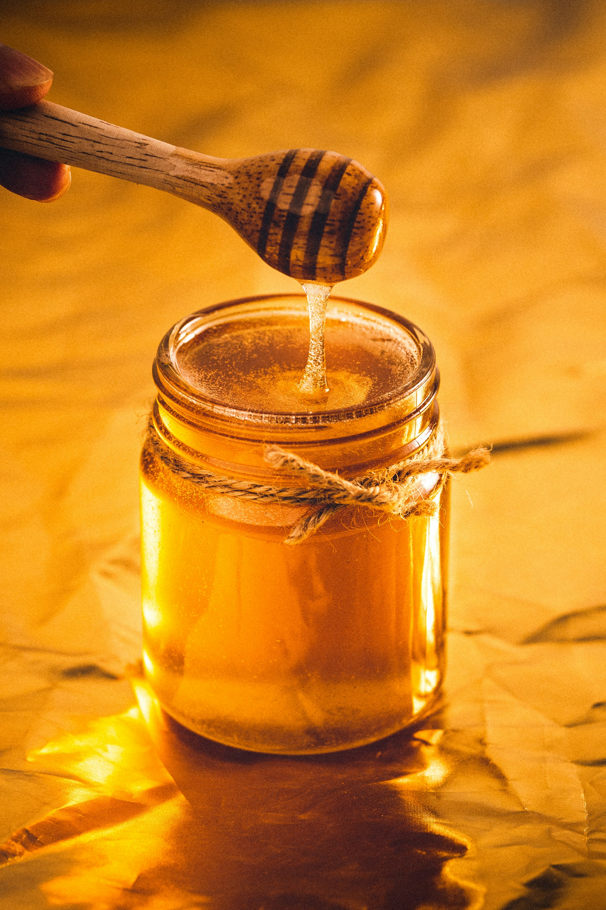
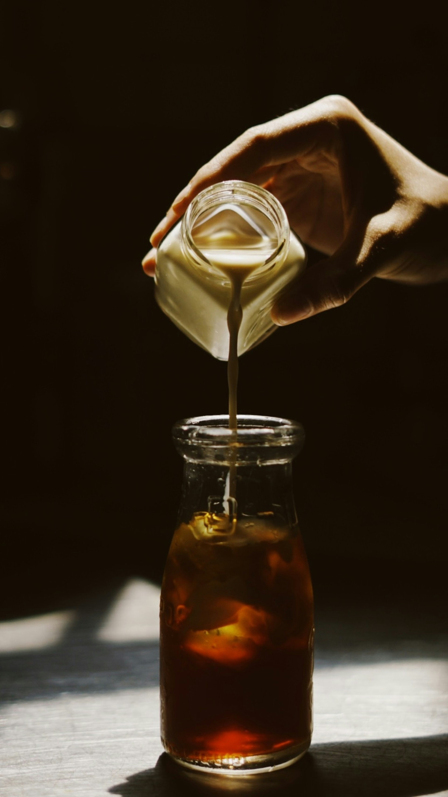
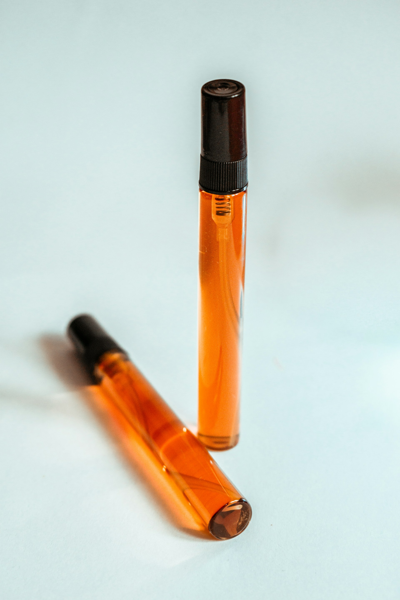
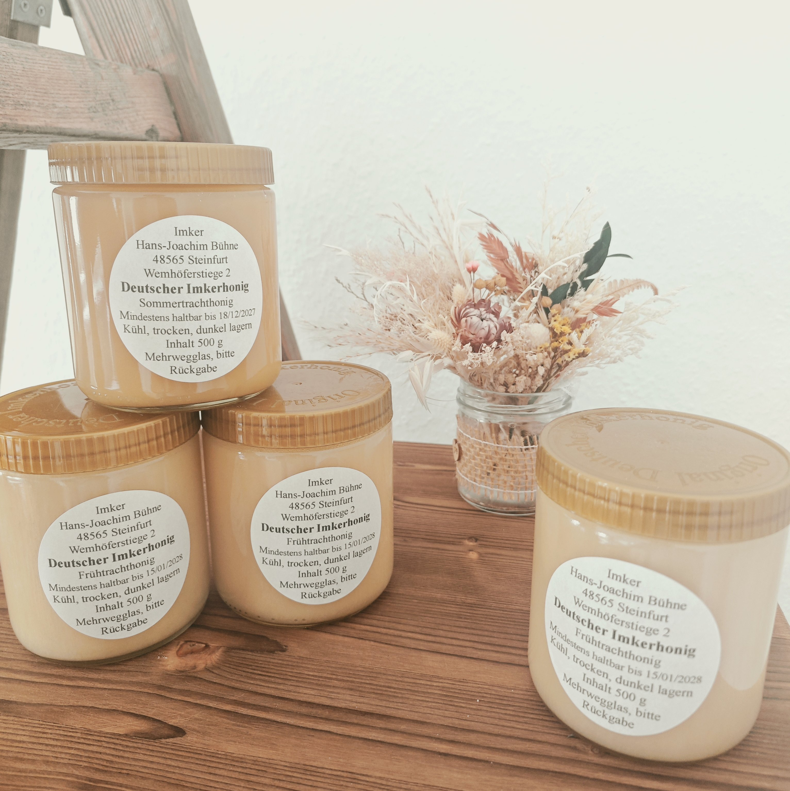

Imkerei Hans-Joachim Bühne
Deutscher Honig aus dem Münsterland
Über unseren Honig

Unsere Imkerei Bühne hat sich der Produktion von hochwertigem, natürlichem Honig verschrieben. Mit jahrelanger Erfahrung und Leidenschaft kümmern wir uns um unsere Bienenvölker und produzieren Honig in bester Qualität – direkt aus dem Münsterland.
Jeder Tropfen Honig von Imkerei Bühne ist ein Produkt der Natur, ohne künstliche Zusätze oder Verarbeitung. Unser Honig aus dem Münsterland steht für Regionalität, sorgfältige Handarbeit und echten Geschmack. Die enge Verbundenheit zur Natur und die Liebe zur Imkerei machen unseren Honig zu etwas Besonderem.
Mit Leidenschaft und Fachkompetenz kümmere ich mich um meine Bienen. Jedes Jahr setze ich alles daran, um die beste Qualität zu erreichen und dabei die Natur zu schützen.
Die Imkerei ist für mich nicht nur ein Beruf, sondern eine Berufung. Ich freue mich, mein Wissen und meine Erfahrung mit anderen zu teilen und hochwertige, regionale Produkte anzubieten.

Aus dem Bienenstock

Blütenhonig
Der klassische Blütenhonig mit zartem, süßem Geschmack. Er eignet sich hervorragend zum Süßen von Tee und anderen Getränken, als köstlicher Brotaufstrich sowie zum Verfeinern von Joghurt, Müsli und Desserts.

Feinkost
Aromatische Aufstriche und Sirupe aus der Imkerei – natürlich, fein und vielseitig.

Propolis (Bienenharz)
Kräftiges Propolis aus eigener Imkerei – Ein besonderes Bienenprodukt mit vielfältigen Verwendungsmöglichkeiten..
Bienenwachskerzen
Handgefertigte Bienenwachskerzen, die beim Abbrennen einen warmen, goldenen Lichtschein und einen dezenten, honigartigen Duft verströmen.
News

Erste Schleuderung der Saison
Die erste Schleuderung der Saison war ein voller Erfolg! Wir freuen uns über eine reiche Ernte und bedanken uns bei unseren treuen Kunden.
Frühjahrskontrolle abgeschlossen
Alle Völker haben den Winter gut überstanden. Die Frühjahrskontrolle zeigt gesunde und starke Bienenvölker – ein gutes Zeichen für die Saison.
Neues Sortiment ab Frühjahr
Ab dieser Saison bieten wir neben unserem Blütenhonig auch Propolis-Produkte und verschiedene Aufstriche an. Wir freuen uns auf Ihre Bestellungen!
Kontaktieren Sie uns
Imkerei Bühne
Adresse: Wemhöferstiege 2, 48565 Steinfurt
Telefon: 0172-1987362
E-Mail: E-Mail laden...